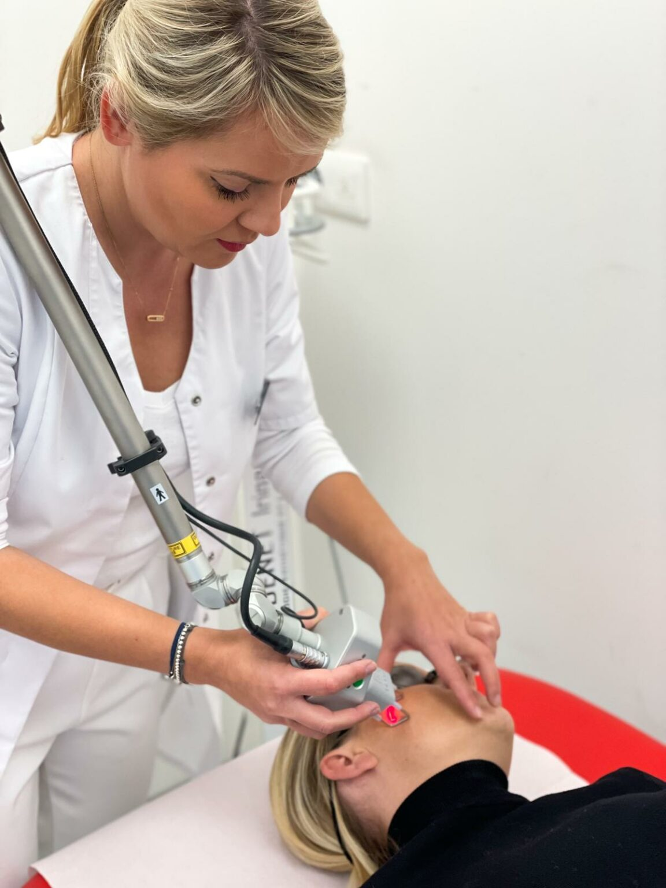

<!-- Departments Section-->
<section class="pb-0">

  <div class="container">
    <div class="row">
      <div class="col-lg-5 d-lg-block"></div>
      <div class="col-lg-7 pb-5 mb-5">
        <h1 class="text-uppercase"><span>Traitements laser CO2</span></h1>
        Laser CO2 fractionné
        Le photo-rajeunissement de type remodelage et retissage fractionnel visent à améliorer l’élasticité et la tonicité du derme tout en estompant les ridules et se pratique avec un laser CO2 fractionné.

        Grâce à cette technique, ce laser détruit des îlots de peau, chauffe le derme qui stimule le collagène et minimise les suites en conservant des intervalles de peau saine.

        Le laser CO2 permet de diminuer les signes de vieillissement prématuré, dus essentiellement à une forte exposition au soleil, au stress et au tabagisme. Le but est d’obtenir un teint unifié plus clair, un effet tenseur avec une amélioration de la texture de la peau, un effacement des petites rides et des cicatrices.

        Ce laser permet de traiter le visage, le cou, le décolleté et les mains.


        Avant la séance :
        Pour les traitements au visage, vous devez prendre une couverture orale anti herpétique 3 jours avant  la séance.
        L’application d’une crème anesthésiante 1 heure avant la séance permet de réduire la sensation de chaleur.
        Pendant la séance :
        Votre peau sera parfaitement nettoyée puis désinfectée. Lors du passage du laser, le docteur Addenet utilise un air froid pulsé, pour atténuer la sensation de picotement et de brûlure.
        De 1 heure à quelques heures, vous ressentirez une sensation de chaleur, « un coup de soleil », qui sera calmée par l’application d’une crème hydratante et apaisante.
        La séance dure environ 30 minutes.
        Après la séance :
        Dès la première séance, le résultat est net. Le traitement va être léger avec quelques croûtelles pendant quelques jours à de véritables croûtes pour les traitements plus profonds. A partir du 3ème au 5ème jour, le maquillage peut masquer la roseur qui peut persister jusqu’à 2 semaines. Une protection solaire est nécessaire avant d’éviter tout risque de pigmentation.
        Le résultat définitif s’appréciera 2 à 3 mois après la séance.
        Plusieurs séances peuvent être nécessaires pour optimiser l’effet souhaité.
        Prix
        A partir de 200 euros

        Vergetures et cicatrices corporelles
        Grâce au laser CO2, le docteur Addenet peut gommer les irrégularités de votre peau et ainsi retrouver son aspect initial.

        Les vergetures apparaissent pendant les périodes de changement hormonal (puberté, grossesse ou prise de poids). Sous l’effet d’un étirement rapide ou important, les fibres qui soutiennent la peau se rompent et forment ces imperfections définitives. Le traitement par laser est très efficace lorsque les vergetures sont encore rouges, beaucoup moins quand elles sont blanches ou trop anciennes.

        Les cicatrices corporelles anciennes peuvent parfois être dissimulées par l’effet du laser. Lors de la première consultation, le docteur Addenet et vous, discuteraient des traitements à suivre et des éventuelles autres options.

        Acné
        L’acné est une maladie de peau où surviennent des boutons sur le visage, le cou, le thorax et le dos. Le traitement au laser CO2 va supprimer ou va améliorer  les  cicatrices de l’acné en donnant un effet de coup d’éclat et d’uniformisation  de la peau ;

        Pour les acnés inflammatoires le traitement par LED (Light Emitting Diode) est une alternative non invasive au traitements médicamenteux

        Des lampes LED rouges sont utilisées, les séances durent de 15 à 30 minutes à raison d’une a deux séances par semaine. 6 à 8 séances sont nécessaires pour obtenir un résultat. Des séances d’entretien sont souvent nécessaires.

        Prix
        30 euros par scéance de LED
      </div>
    </div>

  </div>
</section>

